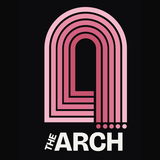
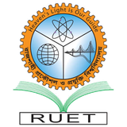
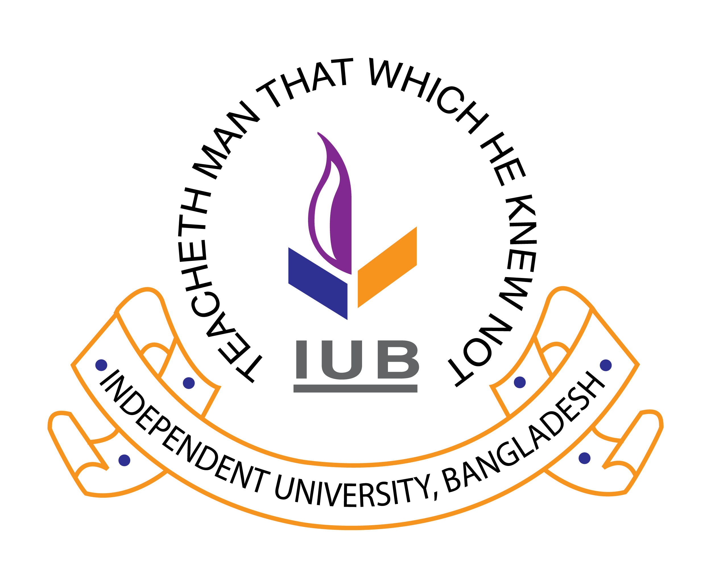
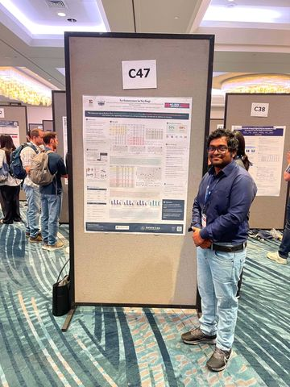

Mohd. Farhan Israk Soumik
Graduate Researcher, Computer Science
Southern Illinois University Carbondale
I am an M.Sc student in Computer Science at Southern Illinois University Carbondale, where I work with Dr. Abdur R. Shahid in the SHIELD Lab. My research studies the security, privacy, and forensic risks that arise when people use consumer generative AI: writing assistants whose one-tap rewrites can both hide emotional signals and help misinformation slip past detectors, and on-device image editors whose edits are hard to localize after the fact.
Before SIUC, I was a research assistant at the Center for Computational and Data Sciences, Independent University, Bangladesh, and earned my B.Sc. in Computer Science & Engineering from RUET. My work has appeared at EMNLP(Main), ACL(IND), ICTAI, ICMLA, and AAAI Workshop on Privacy-Preserving AI(PPAI).
Interests Privacy-preserving ML · Generative AI forensics · LLM & VLM security · Federated learning · Multimodal learning
- SIU Carbondale

CVEX, The Arch
RUET
IUB
News
- Our paper on quantum attention heads in transformers was accepted as a full paper at ICTAI 2026, my first paper in quantum ML.
- Edits in the Wild, a multilingual benchmark for localizing on-device generative image edits, was accepted to the EMNLP 2026 Main Conference (Budapest).
- Started as a Graduate Teaching Assistant in the School of Computing and a Graduate Research Assistant at CVEX, The Arch, SIUC.
-
Presented our poster No Innocence in Styling at ACL 2026 in San Diego.

Photo - Selected as a student volunteer for ACL 2026.
- No Innocence in Styling was accepted to the ACL 2026 Industry Track, with a D&I subsidy grant.

Older news
- Presented privacy-preserving multimodal stress detection at ICMLA 2025 in Boca Raton, Florida.
- Joined the SHIELD Lab at SIUC as a Graduate Research Assistant.
- Received a travel grant to present at the AAAI PPAI-25 workshop.
- Presented audio-editing defenses against LLM emotion inference at AAAI PPAI-25.
- Began graduate study in Computer Science at Southern Illinois University Carbondale.
Publications
See also Google Scholar.
-
EMNLP 2026
Edits in the Wild: A Multilingual Benchmark for Localizing On-Device Generative Image Edits on Consumer Platforms
Conference on Empirical Methods in Natural Language Processing (Main), 2026. To appear
-
ICTAI 2026
When Quantum Entanglement Meets Transformer Attention: A Controlled Study of Quantum Attention Heads
38th IEEE International Conference on Tools with Artificial Intelligence, 2026. To appear
-
ACL 2026
No Innocence in Styling: Discovery of Privacy Protection Capabilities and Security Risks in Consumer Generative AI Writing Assistants
Annual Meeting of the Association for Computational Linguistics (Industry Track), 2026.
-
ICMLA 2025
Privacy-Preserving Multimodal Stress Detection from Wearables with Attention Fusion and Federated Learning
24th IEEE International Conference on Machine Learning and Applications, 2025.
- AAAI-W 2025
- arXiv 2025
-
TENSYMP 2020
Brain Tumor Classification with Inception Network Based Deep Learning Model Using Transfer Learning
IEEE Region 10 Symposium (TENSYMP), 2020.
Research Experience
-
Graduate Research Assistant, Center for Virtual Expression (CVEX), The Arch
Southern Illinois University Carbondale · Supervisor: Dr. Holly Lewis
Social impacts of AI agents and human–agent interaction.
Aug 2026 – Present
-
Graduate Research Assistant, SHIELD Lab
Southern Illinois University Carbondale · Advisor: Dr. Abdur R. Shahid
Security and privacy of consumer LLMs and VLMs; built a large-scale benchmark of on-device generative image edits from major consumer platforms.
Jun 2025 – Jul 2026
-
Research Assistant, Center for Computational and Data Sciences
Independent University, Bangladesh
Data-level fusion for land-use/land-cover classification and segmentation of Synthetic Aperture Radar imagery, in collaboration with the DND Lab, University of Dhaka.
Jan 2022 – Jun 2023
-
Data Science & Business Analytics Intern
The Sparks Foundation (remote)
Jul – Aug 2021
Education
-
M.Sc. in Computer Science
Southern Illinois University Carbondale · GPA 4.00/4.00
2024 – 2027 (expected)
-
B.Sc. in Computer Science & Engineering
Rajshahi University of Engineering & Technology · CGPA 3.47/4.00 (WES)
Thesis: Deep learning for classification and segmentation of tumors in medical images. Advisor: Dr. Md. Ali Hossain.
2016 – 2020
Teaching
-
Graduate Teaching Assistant, School of Computing, SIUC
CS 220B Computer Concepts and AI (Fall 2026) · Design and Analysis of Computer Algorithms (Fall 2024) · Advanced Computer Networks (Fall 2024) · Advanced Operating Systems (Spring 2025) · Computer Algorithms (Spring 2025)
2024 – Present
-
GRE Instructor, Graduate Resources Enhancing Center
Quantitative, Verbal, and Analytical Writing preparation.
2023 – 2024
-
Teaching Assistant, Independent University, Bangladesh
CSE 101 Introduction to Programming · CSE 203 Data Structures. Designed a new Python lab manual to move the course from C to Python.
2022 – 2023
Awards & Service
- 2026 ACL 2026 Diversity & Inclusion Subsidy
- 2026 Student Volunteer, ACL 2026
- 2025 Travel Grant, AAAI Workshop on Privacy-Preserving AI (PPAI-25)
- 2015 Government Scholarship, Higher Secondary Certificate (top 5% merit list)
Beyond Research
I got into computer science by watching my older brother write code at home. Seeing a few lines of text turn into a working program felt like quiet, everyday magic, and I have wanted to understand how it works ever since.
I'm from Bangladesh and moved to Carbondale in 2024. I speak Bangla and English, and some German and Hindi. Before graduate school I taught GRE prep for a year.